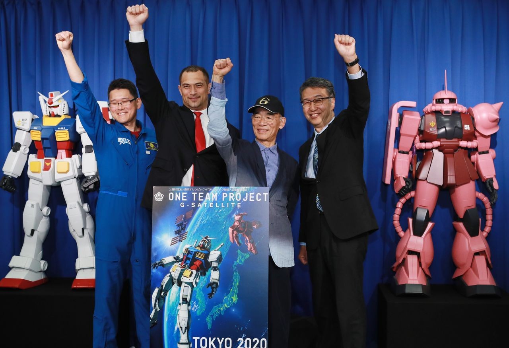

Sobre Nosotros
Hola soy Christian Moreno dueño de la tienda de maquetas de Gundam, desde pequeño
me ha gustado montar maquetas algo que empezo como un entretenimiento que pasó a ser un hobby
en especial he montado maquetas de Warhammer 40000 una franquicia de games workshop. Pero un dia
de mi vida de adolescente empecé a ver un Anime(serie de animacion japonesa) el cual se llamaba Gundam,
me gustó tanto lo que vi que cuando descubrí que se podían montar maquetas del universo de Gundam se abrió
ante mi un nuevo mundo dentro de el montaje de maquetas empecé a comprar y montar mis Mechas favoritos del universo
de Gundam,
cuando acabé siendo un adulto monte este negocio para poder enseñar este maravilloso hobby a otras personas
interesadas y poder
socializar con gente con gustos similares a los míos.
Espero que os lo paseís en grande montando vuestras maquetas favoritas recordad no desespereis al ver
que al principio puede ser un poco tedioso y complicado ya que de todo se aprende, esto es un hobby teneís que
tratarlo como tal
no es vuestro trabajo no os estreseis dedicadle el tiempo que podaís a montar vuestra maqueta para que el
resultado final
sea una delicia para vuestra vista que perfectamente podais usar para decorar vuestro cuarto y sorprended a algún
invitado
curioso por vuestras maquetas.
